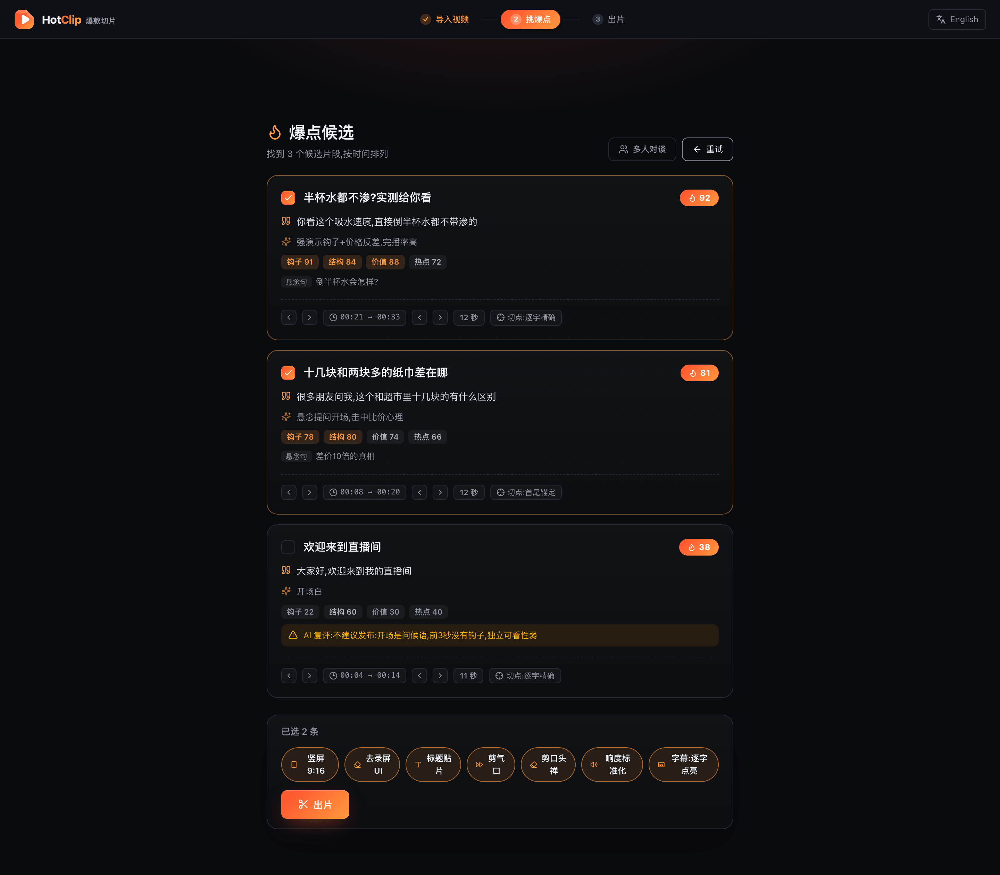

直播切片 · 长视频剪辑
一键切出爆款竖屏短视频
播客、直播回放、课程、Vlog 丢进来,AI 自动找爆点 → 横屏转竖屏 9:16 + 动态逐词点亮字幕 → 直接发抖音 / 快手 / B站 / 视频号 / 小红书 / TikTok。
免费开源 · 本地运行不上传 · 无水印 · 无积分制 · 不限时长。
不用 Python、不用 Docker、连账号都不用注册——下载安装包,双击即用
直播切片怎么做?三步出片
从几小时的直播回放到能直接发布的竖屏成片,中间只有三步——往下滚动,看看每一步发生了什么。
几小时的回放,整个丢进来
播客、直播回放、课程、Vlog——纯音频也行,也可粘贴 B站 / YouTube 等公开视频地址。源视频落到本机后进入同一套流程。
每条候选,都讲得出理由
本地逐字转写后,AI 通读全文挑出金句、冲突、高能段。爆款分 + 四维评审 + 推荐理由,切点由逐字转写反向对齐、精确到词——不是黑盒,看不顺眼取消勾选即可。
"很多人以为切片靠运气,其实爆点是有结构的——钩子、冲突、反转,一个都不能少。"
逐字对齐 · 精确到词 · 可手动微调
出来就是能发的成片
PQ/HLG 且色彩路径完整受支持时先安全转成 SDR BT.709;不支持或检查失败都会保留原路径并分别提示。再用舒适优先构图横转竖 9:16、烧入动态逐词点亮字幕,加上标题贴片、去气口与 -14 LUFS 响度归一。
爆点一开口,字幕就跟着点亮
↑ 动态逐词点亮字幕 · 成片效果演示,实际直接烧录进视频画面,SRT 可导出
为什么选 HotClip
按分钟扣积分、必须上传云端、切点黑盒、中文识别拉胯——市面工具的坑,一次填平。
AI 找爆点 · 直播高光切片
九路证据链(文本/响度/镜头/运动/表情/视觉/弹幕/语气/笑声掌声)圈出高能时刻,多路信号同秒共振才可信;每条候选附爆款分与四维评审,弱片自动标「不建议发布」。爆款分是同批次排名,不是玄学。
素材不出你的电脑
转写、找爆点、切片、导出全在本机跑。未发布的素材、客户内容、带 NDA 的商单,不用交给任何云端服务器;接本机 Ollama 后整条流水线 100% 离线。
自动加动态字幕 · 逐词点亮
词级时间戳驱动,语义断行不「拦腰截断」;SRT 可导出,双语字幕一键开。
画面里的字也参与找爆点
可选视觉扫描同一次识别清晰的产品名、价格、比分和 PPT 要点;不确定就不记,静态但有价值的画面也不会被能量分漏掉。
字幕哪里不稳,直接告诉你
原生/对齐/内插/手改估时来源可见,逐句稿一键只看需复核句;最终成片还检查重叠、阅读速度与闪现,结果写进回执。
横屏转竖屏 9:16
舒适优先构图:能装下就真正锁住到下一镜,确有需要才平滑跟随;跳剪不穿越删掉的画面,持续漏检自动回正。
HDR 转色不靠猜
PQ/HLG 且色彩路径完整受支持才在线性光域转成TV-range SDR BT.709;可用峰值参与高光约束。不支持或色彩检查失败时保留原路径、停用 SDR 域校正并分别提示。
该校正才校正画面
可选智能校正只测最终保留帧;明显偏暗、发灰或过饱和才做有上限的轻调整,正常素材不动、黑白不强行增艳,结果写进回执。
导完再验一遍画面
同一趟扫描检查黑屏、长静音和持续冻结;复用人脸采样统计主体出框比例,全部写进回执且不冒险自动重剪。
封面从最终成片里挑优
响度峰先提名,再本地比较清晰度、曝光、信息量与转场稳定性;黑白场、模糊过渡帧先淘汰,多版封面保持差异,失败自动回退。
口播剪辑:去气口、剪口头禅
自动删停顿、剪掉嗯/呃,响度归一 -14 LUFS,成片像人剪的。
说话人分离
访谈、连麦一键标注谁在说话(本地零上传),字幕还能按人上色。
中文原生
SenseVoice / Paraformer / FireRedASR2 专用引擎,方言、粤语、中英混说都稳。
每一刀都可审计
切点理由、剪了哪些口头禅、用了什么样式——clips.json 回执全记录,可否决可推翻。
多工程项目工作区
工程可切换、重命名、关闭、删除与媒体重连;源素材离线或变化保留工程不丢状态,删除工程不碰素材。
每一步都能撤销重做
选片、标题、切点、手动加片和逐句稿纠错共用可逆历史,随项目恢复;播放、跳播和入出点有专业快捷键。
任务断了,重开接着做
素材、逐字稿、候选与手调切点自动恢复;录播监听和 webhook 共用持久任务队列,可取消、可重试。
出片前一键健康检查
检查 FFmpeg、解析工具、9 类模型、LLM 连通性、磁盘与缓存;核心模型可取消、可续传地准备。
分析与成片看同一画面
运动、镜头、表情、缩略图与可选视觉扫描绑定最终选中视频轨;HDR 预览安全转 SDR 后再分析,64MB 本地索引按画面与色彩决定隔离。
长视频重复出片更快
相同基础成片直接复用本地缓存;H.264 仅在关键帧与画面条件安全时直拷,其余透明回退精确编码。缓存最多 1GB,可单独清理。
敏感词只静音,原文仍可审
自定义词表按逐字稿时间精准静音,跳剪/多片段也能映射;字幕与逐字稿保留原文。
发布效果回流下一刀
稳定内容 ID + 预填指标 CSV 保守对账;待回填/已统计状态清楚,未匹配和歧义不藏起来。
一片多版自动做本地 A/B
同平台、72 小时发布窗口、每版至少 500 播放才比较;只报等待/证据不足/方向性领先,不把相关说成因果。
同场爆点自动排成系列
共享有效关键词的原版成片按源片时间编号成集,附 manifest;变体不充数,硬链接不重复占空间。
真免费,没有套路
无积分制、无水印、不限时长、不锁功能,连账号都没有。
这就是你会用到的「挑爆点」页
演示素材:一段带货直播回放。AI 通读全文给出候选清单,每条附爆款分、悬念句、四维分项与精确切点,弱片自动标「不建议发布」——勾选取舍,一键出片。
下载亲手试试
没有 7 天试用,因为没有付费版
没有分钟额度,因为根本不计费
不需要信用卡,因为连账号都没有
OpusClip 免费档 60 分钟 ≈ 一场直播的零头;HotClip 不数分钟。
谁在用:直播切片 · 切片带货 · 播客剪辑 · 口播剪辑
主播 / 切片手
直播切片 · 录播切片下播后几小时回放自动切成高光短视频;录播姬/OBS 目录挂上「录播监听」录完自动出片;弹幕热度直接进爆点判断,B 站/抖音弹幕文件都认,礼物 SC 点赞另计权。虚拟主播切片同样适用。
带货 / 矩阵团队
切片带货(已授权)商品讲解模式按转化逻辑选段(试用实测 > 卖点 > 价格机制),批量托管出片附文案/封面/元数据,120+ 违禁词规则发布前点名。
播客主
播客剪辑 · 播客视频化纯音频也能出片——自动合成波形动画画面 + 金句字幕,播客节目直接变竖屏视频;转写缓存,换设置重切秒进。
知识区 / 口播博主
口播剪辑自动去气口、剪口头禅、删停顿,长口播变利落短视频;逐句稿即点即改,热词词表一次纠错期期生效。
和 OpusClip、剪映智能切片这些工具的区别
| HotClip | OpusClip / Klap / Vizard | 剪映智能切片 | FunClip 等开源 | |
|---|---|---|---|---|
| 价格 | 免费开源 | $15-29+/月,按分钟扣积分,月底清零 | 核心功能进会员 | 免费 |
| 素材去向 | 全程本地,不上传 | 必须上传云端 | 云端为主 | 本地 |
| 水印/限制 | 无 | 免费档水印+限时长,项目3天过期 | 部分功能受限 | 无 |
| 账号/注册 | 无需注册 | 需注册,退订删项目 | 需登录 | 无 |
| 安装门槛 | 双击安装即用 | 网页版 | 易用 | 命令行/Docker |
| 切点质量 | 逐字对齐,附理由可否决 | 黑盒打分,常断章取义 | 黑盒 | 按句切,无排序 |
详细英文对比:HotClip vs OpusClip(免费开源替代)
常见问题
有什么免费的 AI 切片软件?HotClip 是免费的吗?
HotClip 完全免费:开源(AGPL-3.0)、本地运行、无水印、无积分制、不限视频时长。可选的云端大模型按你自己的 API Key 计费,也可以接本机 Ollama 做到完全免费、完全离线。
直播切片怎么做?直播回放怎么剪辑成短视频?
三步:①把直播回放/播客/长视频导入 HotClip;②AI 转写并自动识别高光爆点,每条附爆款分和理由,可手动取舍;③一键导出竖屏 9:16 成片,字幕已烧进画面,直接发抖音/快手/B站/视频号/小红书/TikTok。
和 OpusClip、剪映智能切片有什么区别?
最大区别是素材不出你的电脑:OpusClip 等 SaaS 必须上传云端、按源视频分钟扣积分(月底清零),免费档带水印;剪映的智能切片核心功能在会员里。HotClip 免费开源、本地处理、无水印、不限时长,AI 切点附理由可审计。
需要联网吗?视频会上传到云端吗?
素材永不上传。转写、字幕、切片、导出全程离线;只有「AI 找爆点」默认调云端大模型(只发文字稿,用你自己的 Key),接本机 Ollama 后整条流水线 100% 离线。
手机拍的 HDR 视频导出会发灰吗?
PQ 或 HLG 且原色、矩阵、范围完整受支持时,HotClip 会在本机做受控色调映射并输出 TV-range SDR BT.709;可用的 MaxCLL / mastering 峰值会约束高光。色彩路径不完整或不受支持时标记未转换,色彩检查失败时单独提示;两者都跳过 SDR 域智能校正。普通 SDR 不变,无新增模型、上传或下载。
智能封面怎么避开黑场、模糊和转场帧?
响度峰和均匀时刻先提名,HotClip 再在最终质检后的成片上本地比较清晰度、信息量、曝光、明暗跨度与短时间稳定性。黑白场和低信息帧先淘汰,一片多版按排名取不同封面;探测失败精确回退原来的响度峰。
支持中文视频吗?方言和粤语呢?
支持且是强项:SenseVoice / Paraformer / FireRedASR2 专用引擎,方言、粤语、中英混说覆盖;界面、字幕、爆点判断提示词都为中文内容适配。
视频怎么自动加字幕?能导出 SRT 吗?
导入后自动逐字转写,关键词高亮/大字弹出/气泡特效等多款动态字幕一档切换、直接烧进画面;也可以一键导出 SRT 字幕文件给平台原生上传,开双语字幕还能整句翻译烧成第二行。
弹幕能参与选爆点吗?
能,而且是最硬的证据。HotClip 自动发现录播旁的弹幕文件(B 站录播姬 .xml、抖音直播录制 .jsonl 都认),弹幕密度与 SC/舰长/礼物/关注/点赞互动按档计权直接进爆点判断;单人刷屏有贡献封顶,突然爆发有额外加成。没有弹幕文件时,响度/镜头/运动/表情/语气/笑声等信号兜底。
剪映可以自动切割片段吗?能和剪映配合用吗?
剪映的智能切片在会员档,且只能切连续区间。HotClip 免费开源,支持把相隔十几分钟的片段拼成一条,还能把每条切片导出成剪映草稿——AI 粗剪交给 HotClip,打开剪映接着精修。
能自动剪掉口播里的停顿和口头禅吗?
能。「剪气口」自动删掉说话间的静音停顿(去气口),「剪口头禅」剪掉嗯/呃与结巴重复——剪了什么逐条写进 clips.json,你始终知道 AI 动了哪里。
需要显卡吗?配置要求高吗?
不需要显卡。本地转写用 int8 量化的小模型,普通 CPU 就能跑;找爆点的大模型在云端或你本机的 Ollama。
可以切别人的直播吗?直播切片如何申请授权?
HotClip 面向你自己的内容或已获授权的切片。切别人的直播请先拿到授权(如各平台/公会的主播切片授权计划);未经授权的影视/直播搬运不受支持,也不欢迎。